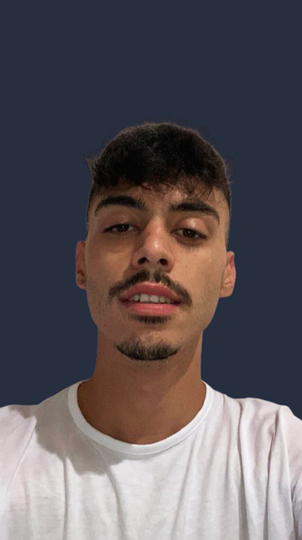

Junior Full Stack Developer
Tel. +39 370 142 1598 Email sergiomaselli1@gmail.com Sede Bari, disponibile al trasferimento LinkedIn linkedin.com/in/sergio-francesco-maselli GitHub github.com/Sergio-dev01 Nato il 04/10/2001
Junior Full Stack Developer formato con il Master Full-Stack Development di Epicode. Sviluppo applicazioni web complete, dall'interfaccia in React, Next.js e TypeScript alle API REST in Java e Spring Boot, fino alla progettazione del database PostgreSQL. Curo la qualità del codice, la chiarezza dell'interazione e la coerenza tra frontend e backend. Cerco un team in cui crescere accanto a sviluppatori esperti, prendendomi responsabilità reali.
Cinematheque | Web app full-stack, progetto personale
2026
Stack: Next.js 16, React 19, TypeScript, Tailwind CSS, Supabase, Zod, Vitest, Playwright
PetBnb | Progetto finale del master Epicode
2025
Stack: Java 17, Spring Boot 3, Spring Security, JWT, JPA / Hibernate, PostgreSQL, React, TypeScript, Vite
Mimo! | Progressive Web App, progetto personale
2026
Stack: React, Vite, Service Worker, Web Audio API, Wake Lock API
LinkedIn clone | Build week Epicode, team di 4 persone
2025
Stack: React, Redux Toolkit, React Router, React Bootstrap, API REST
Profilo con esperienze modificabili, feed dei post e ricerca di offerte di lavoro, sviluppati in team su GitHub.
Master Full-Stack Development | Epicode
02/2025 – 08/2025
Programma intensivo di 6 mesi: Java, Spring Boot, PostgreSQL, API REST, autenticazione JWT, React, Redux, TypeScript, JavaScript, HTML5, CSS, Bootstrap. Progetti settimanali e build week in team.
Diploma in Informatica e Telecomunicazioni | IISS Volta De Gemmis, Bitonto
2022 – 2024
Programmazione, gestione delle reti, sicurezza informatica, sistemi operativi e sviluppo software.
Italiano: madrelingua
Inglese: intermedio
Lavoro di squadra, curiosità e voglia di imparare, gestione del tempo, responsabilità, perseveranza.
Patente: B